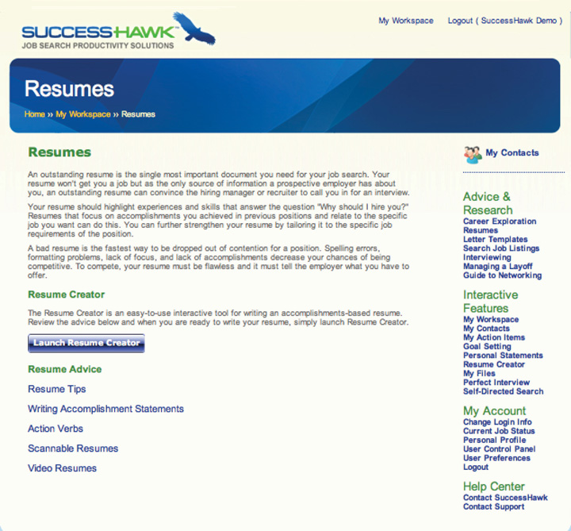

4.8 Chapter Review and Exercises
Creating a compelling marketing campaign is a vital step in your job search because it helps you market your skills and abilities to future employers before you meet them. It’s a critical link in the six-step job search process. Take great care in creating each of the four components:
- A résumé
- A cover letter
- A pitch
- An online profile
Your résumé is clearly the cornerstone of your marketing campaign because it sells your candidacy. It also serves as a one-page summary of your strengths, abilities, job responsibilities, educational background, and much more.
The more care you put into writing your résumé, the greater your chances of being noticed by the employer of your choice. The best strategies for writing a résumé are the following:
- Be clear, concise, completely accurate (in terms of grammar and content), and results-oriented.
- Quantify whatever accomplishments you can.
- Proofread your résumé with someone who knows what a résumé should look like and contain.
It’s also important to know that while a résumé is a critical piece of your job search, it alone will not get you an interview or a job. A résumé, at best, is subjective, and different individuals have different preferences regarding format, font, length, typeface, and content. Following the guidelines of this chapter can only help position you best for success.
The remaining elements of your marketing campaign will be covered in the following chapter; each element will continue to strengthen your marketing campaign and ultimately, your job search success. Creating your compelling marketing campaign will be more effective when you are more specific, targeted, and thoughtful:
- Your résumé will prove your success to your past employers, which then proves your worth to your future employers.
- Your cover letter makes the case for why you should be hired because it highlights the two or three critical skills necessary to succeed in the job in which you are most interested.
- Your pitch allows you to introduce yourself in a clear and concise way, highlighting the strengths that will enable you to succeed.
- Your online profile works behind the scenes so you will be noticed by recruiters who seek talent, and also provides a great way to stay connected with your network.
Step 3 is research, which will enable you to gather vast amounts of information about your industry, your function, your geography, and the companies you are targeting.
Chapter Takeaways
- A compelling marketing campaign is vital to your job search and is composed of four things: a résumé, a cover letter, a pitch, and an online profile.
- Your marketing campaign must have high-quality standards because it represents you when you are not there.
- Your résumé is the cornerstone of your marketing campaign, and it positions you for success.
- A well-written résumé can do seven specific things for you and your job search.
- A résumé should include the following sections: header, objective, education, experience, skills (computer and language, when appropriate), and additional information that may include community service, certifications, and interests.
- Bullets in your work experience section should outline your responsibilities and your accomplishments in a clear, results-oriented manner.
- Action verbs should be used to describe your responsibilities.
- Résumés can be presented in two formats: a chronological format and a functional format. Both have advantages and can be used by college students and more experienced candidates.
- A CV is very different from a résumé. CVs are used quite a bit internationally, often for research or clinical positions. CVs also can be six to eight pages in length and include biographical information such as marital status and country of origin.
- Recruiters are trained résumé screeners and actively look for gaps in employment, in addition to short periods of employment.
- Ask three or four individuals to act as references. Proactive candidates create a reference document that lists the names and contact information of people who will serve as positive references.
Chapter Review
- How can a résumé market you as a candidate?
- What are the two most important things a résumé must be?
- What are the main things a résumé can do for you?
- What are the most important sections of a résumé?
- Why would you use an objective on your résumé?
- What should you record on your voice mail?
- Why should you not pick up your cell phone if you are in a noisy place, especially if you don’t recognize the number?
- Why are action verbs important?
- Why is it important to quantify your accomplishments?
- Why is it helpful to be results oriented?
- Why is it important to include skills, certifications, and interests on your résumé?
- What is the difference between a chronological and a functional résumé? What are the advantages of each type?
- What is the difference between a résumé and a CV?
- Why do recruiters care about short stints at employers and any gaps in employment?
- What is the most productive way to present references to a prospective employer?
- How can you keep your references up to date regarding your job search?
SuccessHawk: Résumés
For tips and ideas about creating your résumé, go to the menu bar at the right and click on Résumés in the advice and research section. (Note: There is a charge of $9.95 for use of the Résumé Creator.)
